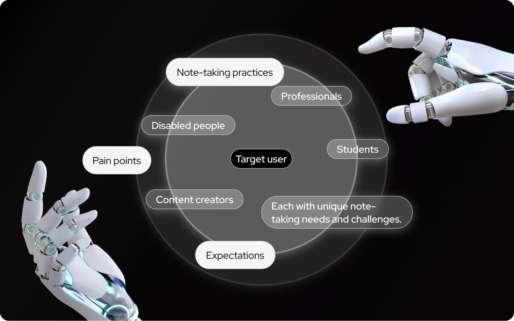

In our increasingly digital world, note-taking remains crucial for students, professionals, and content creators. Traditional methods, especially transcribing audio recordings manually, are inefficient, time-consuming, and error-prone, impacting productivity and information retention. Artificial intelligence (AI) offers a promising solution through automated transcription and summarization.
This study explores this potential by bridging the gap between AI capabilities and user needs. Through user interviews and research, we aim to ensure AI-powered note-taking solutions are not only efficient but also accessible and trustworthy. Our user-centered design approach seeks to provide valuable insights for developing an AI-driven note-taking tool that enhances productivity, accessibility, and engagement for diverse user groups.
Understanding user behavior, needs, motivations, and pain points is essential for designing a successful note-taking application.
Taking notes from lectures or meetings is time-consuming. Many struggle to find specific moments in long recordings. Can AI solve this?
Why it matters: We want to learn how people currently capture information from audio recordings (like lectures or meetings) to understand their current challenges and workflows.
Why it matters: We want to know if people are comfortable using AI for note-taking, what their concerns are, and what would make them trust AI tools.
Why it matters: We want to learn what features people would find most helpful in an AI-powered note-taking app, such as how they want the AI to transcribe audio, summarize information, and help them organize their notes.
As a UX Researcher, I conducted participant interviews to understand user needs and pain points, focusing on efficiency, accessibility, and trust for AI-powered note-taking. I translated these research findings into actionable design recommendations to ensure an intuitive and user-centered website experience.
2
2 weeks
UX Researcher
Additionally, I managed research timelines and ensured alignment between research and design recommendations, contributing to overall project efficiency and delivering insights that directly informed the final design recommendations.
Our research process began by identifying and defining our target user groups. These included students, professionals, content creators, and individuals with disabilities, all of whom have distinct note-taking needs and challenges. Having established our target users, we then constructed a semi-structured interview guide designed to explore their current note-taking practices, pain points, and expectations for an AI-powered solution.
Participants completed a brief demographic questionnaire to provide context for their responses. This questionnaire collected data on age, gender, occupation, and education level, allowing us to analyze potential variations in needs and preferences across different user groups and provide a more nuanced interpretation of our findings.
Through user interviews and subsequent analysis, supported by our affinity diagramming process, we identified several key themes.
I initially proposed an Ikea app but was paired with a teammate working on Gunpla, an area unfamiliar to me. However, my passion for anime helped me connect with the community and develop a personal interest.
We gathered insights from diverse job roles, but the limited age range and AI familiarity highlighted gaps in inclusivity. Improving recruitment strategies is a priority moving forward.
Despite tight deadlines, this project refined my research skills. It reinforced my interest in longitudinal studies and AI-powered note-taking solutions, motivating me to optimize tools for diverse user needs.